Portfolio · Selected work
Selected work.
Built with intention.
Real products for learning, communication, and everyday decisions—designed and engineered from first idea to working interface.
Product photography
Built for real screens.
Presented as real products.
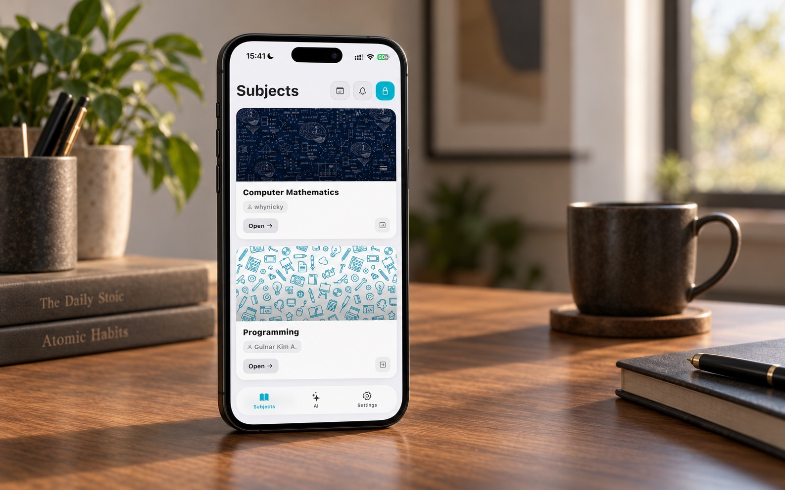
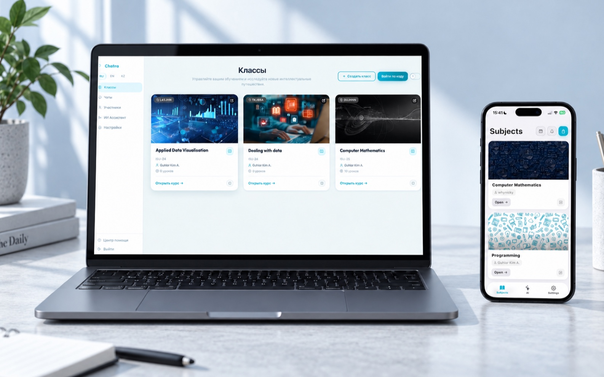
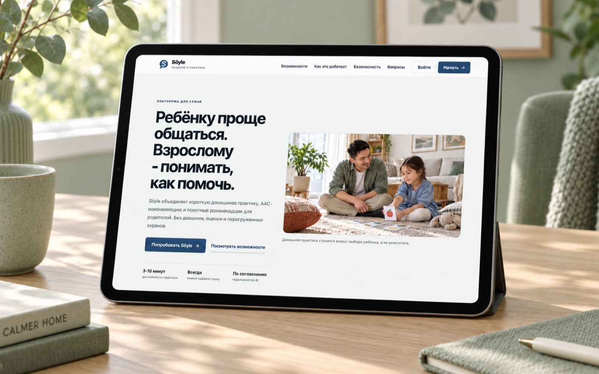
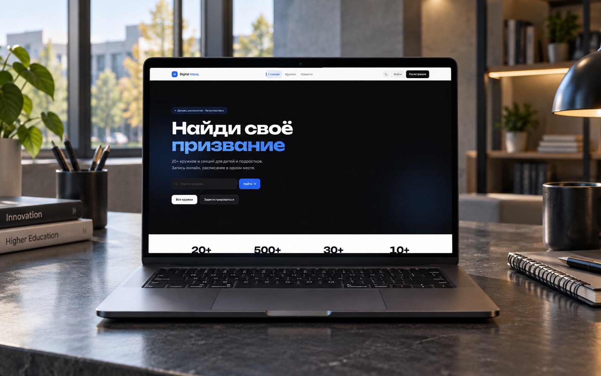
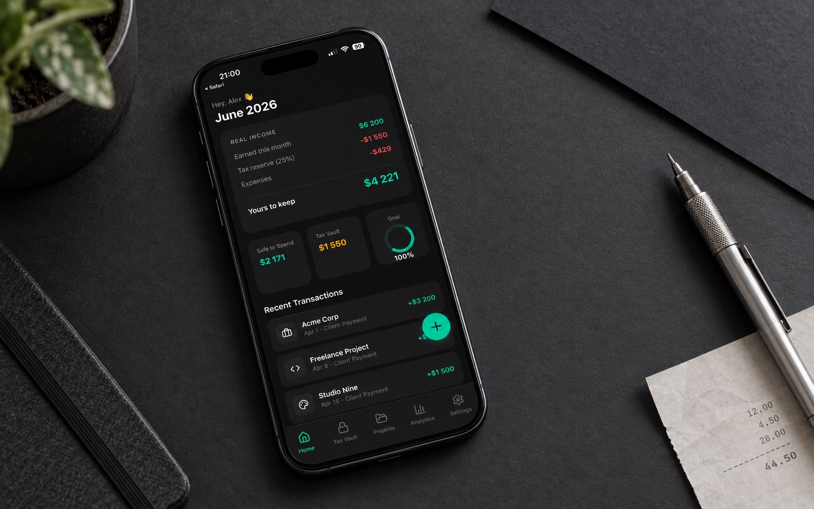
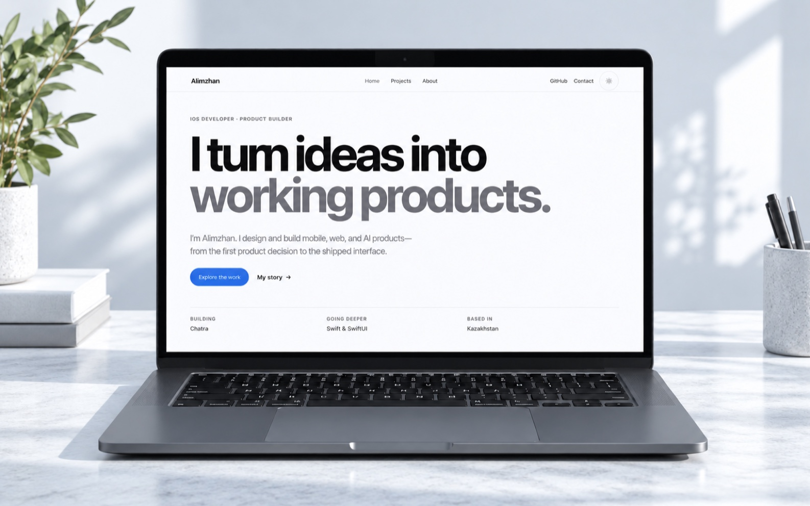
Inside the work
Deep work across product, interface, and engineering.Chatra.
One place for classes, assignments, attendance, grades, and AI-supported learning.

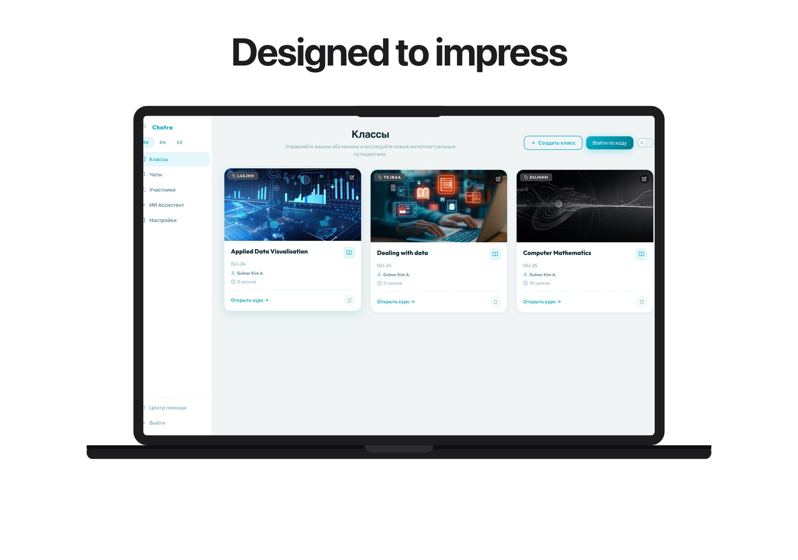
Chatra replaced scattered chats and spreadsheets with role-based mobile and web experiences. Students can see their progress, teachers can run a class, and administrators can manage the system without changing tools. The web dashboard is part of the same ecosystem, sharing the API and visual language with the mobile product.
- Role
- Mobile lead and product design
- Stack
- Flutter, FastAPI, Nuxt
- Result
- Used in real classrooms
Söyle.
A calmer way for children to communicate, practise at home, and move at their own pace.
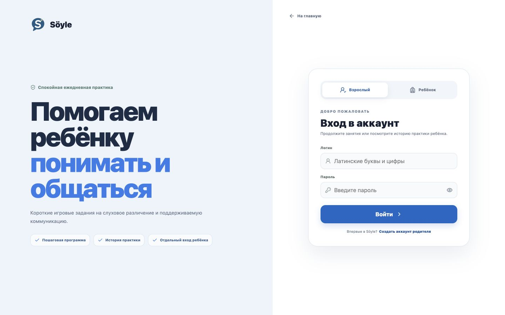
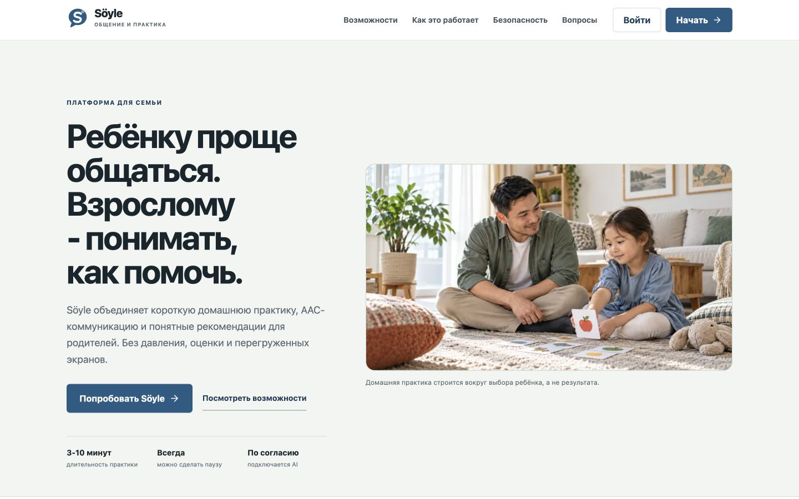
Söyle combines short guided practice, AAC communication, and a separate parent space in one role-based product. The experience keeps each screen focused, preserves the child’s choice, and explains each recommendation without sending responses to an external AI provider.
View source- Role
- Product design and full-stack development
- Stack
- Next.js, React, FastAPI
- Focus
- Accessible, privacy-aware family support
FORGE.
A guided workspace that turns an unclear business need into a task a student team can start.
Превратите идею
в задачу, понятную всем.
Опишите проблему, уточните детали, проверьте готовность и передайте её команде.
AI-классификация обращений клиентов
FORGE asks the missing questions, scores task readiness, builds an editable Blueprint, and tests whether a handoff can succeed without extra context. The screens above reproduce the running product and its complete 100/100 task flow.
- Role
- Product and full-stack development
- Stack
- Nuxt, TypeScript, FastAPI
- Core
- AI interview and readiness score
Selected work
Focused builds shaped by a clear constraint.Digital
Urpaq.
A bilingual service platform for the Palace of Schoolchildren, designed around different roles and everyday workflows.
The platform brings applications, programmes, and administration into one clear interface in Kazakh and Russian. The work combined service design, role-based navigation, secure APIs, and a focused competition build.
View source- Role
- Full-stack development
- Stack
- Nuxt, FastAPI, i18n
- Result
- Top 2 finalist
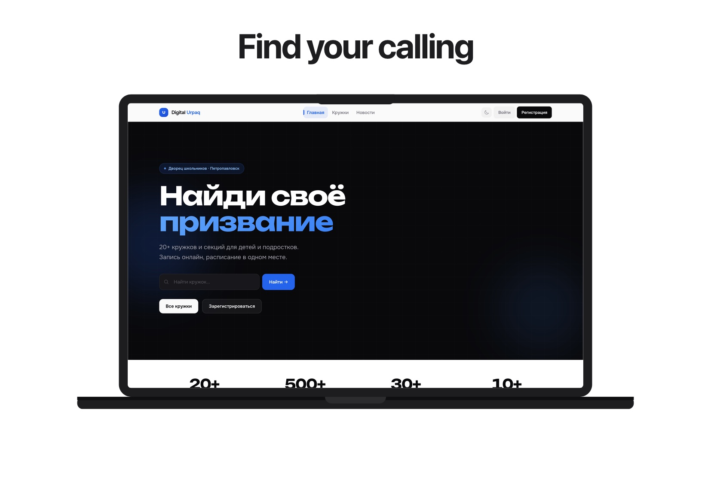
RugPull
Risk.
Crypto risk translated into a fast, readable decision interface during a 48-hour sprint.
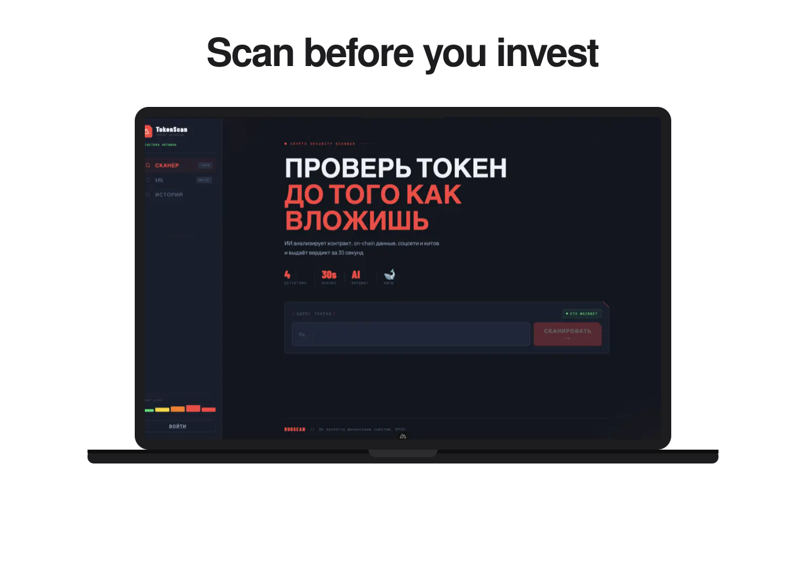
The challenge was not showing more data; it was making warning signs understandable before a decision. We reduced a complex analysis flow to a focused responsive dashboard connected to a Python service.
View source- Role
- Frontend and product UI
- Stack
- Vue, FastAPI, Python
- Result
- Top 5 finalist
FreelanceOS.
A mobile workspace that makes freelance income, taxes, expenses, and project payments easier to understand.
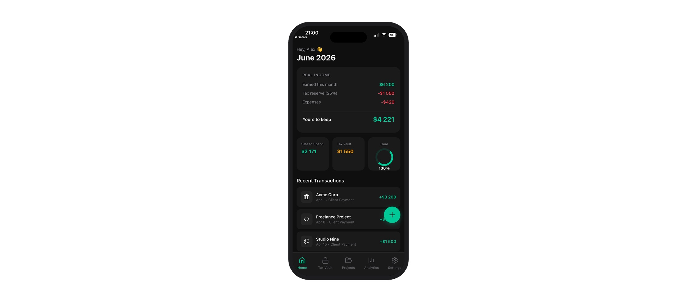
FreelanceOS brings the numbers a freelancer checks every day into one calm dashboard: real income, tax reserve, expenses, safe-to-spend money, goals, and recent client payments.
View source- Role
- Mobile product design and development
- Stack
- Flutter and Dart
- Focus
- Income, taxes, and project records
This
portfolio.
A personal site treated as a product: clear narrative, responsive layouts, restrained motion, and no framework.

The system uses shared type, colour, spacing, navigation, dark mode, and accessible motion across every page. Each iteration is tested as a complete experience, not as isolated decoration.
View source- Role
- Design and development
- Stack
- HTML, CSS, JavaScript
- Focus
- Typography and responsive motion
Chatra
Web.
The browser side of Chatra, built for students, instructors, and administrators.
Separate user roles share one visual language while keeping their own tasks direct. The dashboard includes Kazakh localisation, live API data, and the administrative workflows behind the mobile experience.
View source- Role
- Product UI and integration
- Stack
- Nuxt, Vue, i18n
- Users
- Students, teachers, admins
Additional work
Tools, systems, and ongoing experiments.More work.
CS50P
Every problem set completed by hand: functions, testing, files, regular expressions, and object-oriented Python.
FastAPI Template
A reusable backend with authentication, PostgreSQL, Docker, and interactive API documentation.
Let’s make something useful.
I’m open to product collaborations, internships, and focused freelance work.
Start a conversation